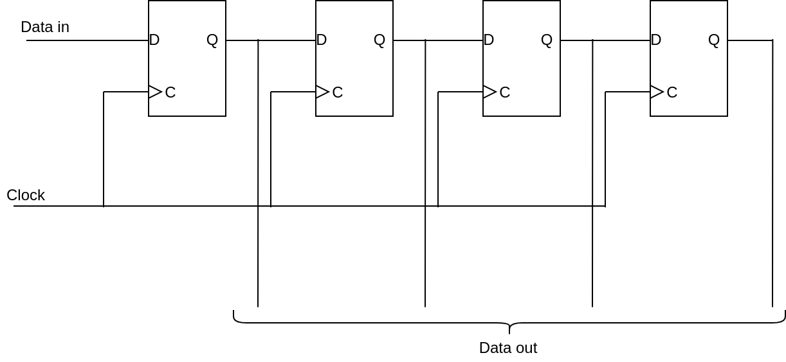

Serial in, parallel out is een shift register dat gebruikt wordt voor data ontvangst. Meestal komt de data serieel binnen en vaak heeft de volgende stap de data parallel nodig.

SIPO shift register
Je kan zelf proberen de beschrijving te maken in VHDL